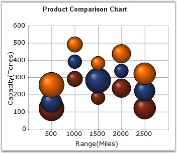

Bubble Chart is an extension of the Scatter Chart (or XY-chart) where each data marker is represented by a circle whose dimension forms a third variable. Consequently, bubble charts allow three-variable comparisons allowing for easy visualization of complex interdependencies that are not apparent in two-variable charts. Bubble charts are frequently used in market and product comparison studies.
Though it's called a bubble chart, the data marker can be rendered as either a circle, image or square using the BubbleType property.
The following image shows a multi series Bubble Chart.

Figure 69: Chart displaying Three Bubble Series
Chart Details
|
Details | |
|
Number of Y values per point |
2 (optional second value defines the size of the shape). |
|
Number of Series |
One or More |
|
Cannot be Combined with |
Pie, Bar, Stacked Bar charts, Polar, Radar. |
Bubble series can be added to the chart using the following code.
|
[C#]
// Create chart series and add data points into it. ChartSeries series = this.chartControl1.Model.NewSeries("Series Name",ChartSeriesType.Bubble); // The 2nd Y value represents the size of the shape series.Points.Add (0, 1, 7); series.Points.Add (1, 3, 5); series.Points.Add (2, 4, 9);
// Add the series to the chart series collection. this.chartControl1.Series.Add (series); |
|
[VB.NET]
' Create chart series and add data point into it. Dim series As ChartSeries = Me.chartControl1.Model.NewSeries("Series Name", ChartSeriesType.Bubble) ' The 2nd Y value represents the size of the shape. series.Points.Add (0, 1, 7) series.Points.Add (1, 3, 5) series.Points.Add (2, 4, 9)
' Add the series to the chart series collection. Me.chartControl1.Series.Add (series) |
See Also